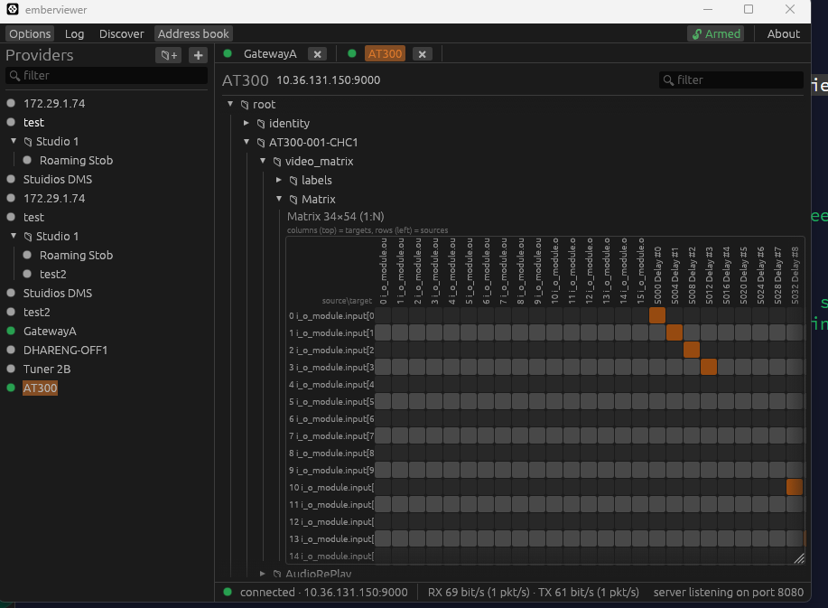
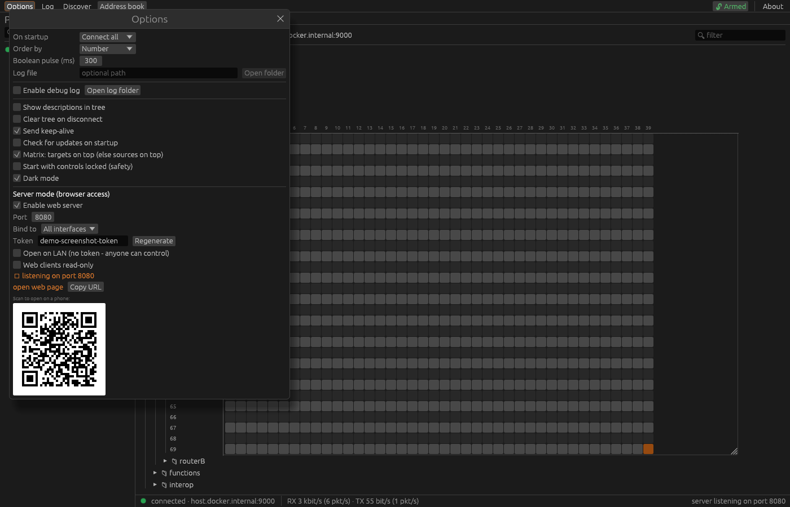

A look inside
Screenshots
The GUI is built with egui/eframe for a fast, native feel on every platform.



A free, cross-platform Ember+ viewer
Browse, monitor and control Ember+ devices from one clean desktop app
on Windows, macOS and Linux. An open, cross-platform alternative to Lawo's
EmberPlusView.exe.
Prebuilt binaries are published on the GitHub Releases page. Prefer source? See Getting started.
New Server mode
Ember+ gear often sits on dedicated media networks that aren't always reachable from where you need to be, and devices often limit how many Ember+ consumers can connect at once. Flip on server mode and the desktop app becomes a gateway: it holds one connection per device and fans the live tree out to browser clients. This opens up access from iPads, tablets, phones and anything else with a browser.
Ember+ devices ──TCP──► emberviewer (engineering PC) ──HTTP / WebSocket──► 📱 phone
one connection per device shared live tree 💻 laptop
A fan-out hub shares a single TCP connection and subscription set across every viewer, so a device sees just one consumer. Closing a browser never drops another viewer's updates.
The very same egui UI, compiled to WebAssembly. Documents cross as the device's original Glow/BER bytes, so each browser rebuilds a byte-identical tree.
Token-protected by default (the token rides in the page URL). Toggle open on LAN for no-auth on a trusted network, or read-only so browsers can watch but not change anything.
Bind the right network interface, then share the shown URL or scan the QR code. Browse the tree, set values, read meters, route matrices and invoke functions from anywhere on the WiFi.
Why it exists
EmberPlusView.exe has been the go-to Ember+ tool for years and does the job
well. emberviewer covers the same ground - browsing, get/set, matrices, functions and
streams - rebuilt from the protocol up, for anyone who'd like an option that is open,
cross-platform and actively developed.
emberviewer is MIT-licensed and developed in the open, so anyone can read it, audit it, or build on it.
A single Rust codebase runs natively on Windows, macOS and Linux.
It's under active development, so it keeps pace with new devices and feedback from the field.
Features
A focused tool that gets out of your way - fast browsing, live values and real control.
Standouts vs the old EmberPlusView
Serve the UI to phones and laptops on your LAN - token-protected, with read-only and open-LAN modes. Learn more.
High-rate StreamFormat-aware decode driving live vertical meters, with pop-out windows.
A running log of parameter changes for monitoring and debugging, optionally written to a file.
Providers organised in folders with drag-and-drop, saved between sessions, with JSON import / export.
An opt-in lock guards against accidental edits, and a TX/RX counter shows live traffic toward the device.
And everything you expect
Connect to any Ember+ provider over TCP (default port 9000).
Walk the provider tree on demand with getDirectory, expanding only what you open.
Read parameter values and set them, with live subscriptions for changes.
Dedicated set and pulse controls for boolean parameters.
Route a matrix grid with device-resolved source/target labels and a signal-parameters popup.
Call provider functions and inspect their results.
Several simultaneous provider sessions, each in its own tab.
Filter the tree, copy a node's path, and find what you need fast.
Automatic reconnection with exponential backoff when a link drops.
Friendly enum labels and slider controls that honour each parameter's min/max and display factor.
Automatic discovery of providers on the local network (_ember._tcp).
Honours isOnline so disappearing nodes grey out instead of vanishing.
Proven in the wild
emberviewer is exercised against a broad range of production Ember+ providers - consoles, routers, processors and software stacks from across the industry - not just a reference implementation.
Run it against something we haven't listed? Let us know - interop reports are welcome.
A look inside
The GUI is built with egui/eframe for a fast, native feel on every platform.


Get started
No build tools, no installer - grab the binary for your platform, unzip, and run.
From the latest release, grab the Windows .zip or the macOS / Linux .tar.gz. Every binary already embeds the web UI for server mode.
Unzip and launch emberviewer - no install step. On Windows, SmartScreen may warn about an unsigned binary: choose More info → Run anyway. The Linux build needs glibc 2.35+ (Ubuntu 22.04 / Debian 12 or newer).
Add a provider to the address book by its host and port (Ember+ defaults to 9000), then connect and browse. New to Ember+? Read the protocol primer.
Update check: on launch emberviewer asks GitHub once a day whether a newer release exists, and shows an "Update available" note if so. It's a normal HTTPS request (so GitHub sees your IP) and sends nothing about your devices. Turn it off any time in Options → "Check for updates on startup".
Want to hack on it instead? Build from source - it only needs a Rust toolchain.
For developers
All you need is a Rust toolchain.
git clone https://github.com/mattlamb99/emberviewer
cd emberviewer
cargo run --release -p emberviewerA plain build serves a placeholder for server mode; to embed the real browser UI, build the wasm bundle first. See the build notes in the README.
A short primer on what Ember+ is - providers, the tree of nodes, parameters, matrices and functions, and how getDirectory / set / subscribe work.